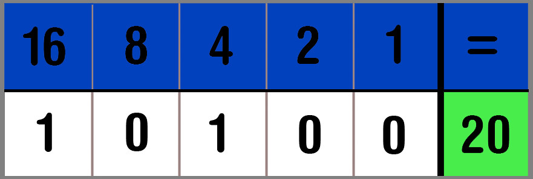

Als wij willen tellen gebruiken wij het decimaal talstelsel, ook wel het tien talligstelsel. Ons talligstelsel bestaat dan ook uit 10 cijfers, 0 t/m 9. Als je tot 9 hebt geteld zijn je getallen zogezegd ¨op¨. Dus dan zet je op de plek van de 9 een 0 en dan een 1 daarvoor, zodat je dus 10 hebt. Als je bij 19 bent en een getal hoger wil zet je weer op de plek van de 9 een 0 en op de plek van de 1 zet je nu een 2 en zo verder.
Een computer telt anders, namelijk met een binairstelsel. Binair staat voor 2, dit talligstelsel heeft dus ook maar 2 cijfers, 0 en 1. Je kan dus in het eerst 'vakje' een 0 zetten of een 1. Als je na de 1 nog een verder wil tellen zet je net als bij ons talligstelsel een 0 op de plek van de 1 en een 1 daarvoor. Dan staat er dus 10, maar in plaats van dat er tien staat, zoals wij dat kennen staat hier eigenlijk twee. Het binair stelsel werkt in machten van 2, dus stel je wil een getal in het binair stelsel schrijven met 5 getallen, moet je eigenlijk denken dat de getallen 16 8 4 2 1 er boven staan. Dus als je bijvoorbeeld het getal 10111 hebt staat er eigenlijk drieëntwintig. Je telt alle getallen waar een 1 onder staat bij elkaar op en de getallen met een 0 er onder niet. Dus bij 10111 doe je 16+4+2+1=23, houd hierbij wel rekening dat je de getallen daarboven, dus de 16 8 4 2 1, in de hoofd denkt en dus niet echt neerzet.
Als je hier mee wil oefenen staat er hier onder een spelletje, genaamd Binary Bonanza, waar je goed kan oefenen met het binair stelsel.